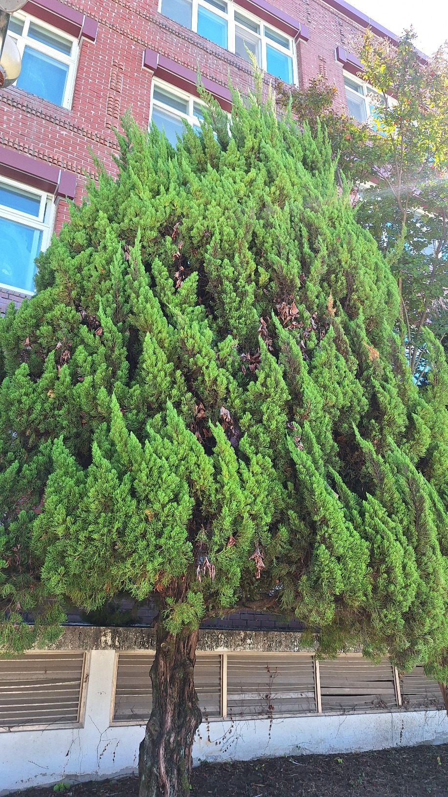

가이즈카향나무 소개
안녕하세요! 우리 학교 주변에서 만날 수 있는 가이즈카향나무를 함께 살펴보겠습니다.
겉으로는 평범한 초록 나무처럼 보이지만, 자세히 보면 가지가 비틀리며 위로 뻗는 독특한 모양을 발견할 수 있습니다. 지금부터 이 나무의 특징과 생태적 역할을 추적해 봅시다.

가이즈카향나무란?
향나무의 원예 품종으로, 가지가 위로 솟으며 불규칙하게 굽이치는 수형과 빽빽한 비늘잎이 특징입니다. 사계절 푸른 잎을 유지하는 상록 침엽수입니다.

가이즈카향나무 기본 정보와 계절 변화
가이즈카향나무 기본 정보
가이즈카향나무를 찾아볼 수 있는 곳
가이즈카향나무는 학교와 공원 등 조경 공간에 심깁니다. 대구 달성공원에는 가이즈카향나무가 있다는 역사 기록이 남아 있습니다. 대한민국역사박물관 근현대사아카이브의 1960년대 사진 자료에는 ‘달성공원 가이즈카 향나무와 최제우 동상’이 기록되어 있습니다.
계절마다의 모습
가이즈카향나무는 상록수이므로 계절이 바뀌어도 잎이 한꺼번에 떨어지지 않습니다. 봄에는 새순이 자라고, 여름에는 짙은 녹색 수관이 무성해지며, 가을과 겨울에도 푸른 잎과 독특한 가지 모양을 관찰할 수 있습니다.
새순이 돋고 새 가지가 자람
잎이 무성하고 녹음이 짙어짐
상록 잎과 비틀린 수형 유지
낙엽 없이 푸른 모습이 남음
신기한 사실: 피톤치드
나무를 포함한 식물은 테르펜류와 같은 휘발성 유기화합물을 방출합니다. 숲 환경에서 이러한 물질과 자연 환경이 사람의 스트레스 반응에 미치는 영향을 연구하고 있습니다. 다만 피톤치드가 질병을 치료한다고 단정할 수는 없으며, 숲에서의 경험과 정제 성분의 의학적 효과는 구분해야 합니다.
IT·공학 연결: 사진으로 나무를 판별하는 컴퓨터 비전
스마트폰 사진 속 잎의 윤곽, 잎 배열, 가지 형태, 수피 질감 등을 특징값으로 뽑아 데이터베이스의 표본과 비교하면 수종을 분류할 수 있습니다. 비슷한 향나무류를 구분할 때는 한 가지 특징만 보지 않고 여러 특징을 함께 분석하는 것이 중요합니다.
나무 키우기 게임
직접 만든 게임으로 식물을 키워 보며 재미있게 배워 봅시다!
🎮 학교 식물 게임
가이즈카향나무와 도시 열섬 현상 및 에너지 소비
도시 열섬 현상이란?
도시 열섬 현상은 건물과 도로가 태양열을 흡수하고 저장하면서 주변 지역보다 도시의 기온이 높아지는 현상입니다. 특히 건물과 아스팔트가 밀집한 도심에서는 열이 쉽게 축적되어 여름철 기온 상승의 원인이 될 수 있습니다.
가이즈카향나무가 도시 온도에 미치는 영향
가이즈카향나무는 빽빽한 가지와 잎으로 그늘을 형성해 지표면이 직접 받는 햇빛을 줄입니다. 또한 잎의 증산 작용을 통해 주변 온도를 낮추는 데 기여할 수 있습니다.
나무와 도시 온도의 관계
가이즈카향나무의 그늘은 지표면과 주변 시설물이 흡수하는 태양 에너지를 줄이고, 증산 작용은 주변의 열을 낮추는 데 도움을 줍니다. 이러한 과정은 도시의 열 환경을 개선하는 자연적인 방법 중 하나입니다.
도시 녹지와 에너지 소비의 관계
가이즈카향나무와 같은 조경수의 온도 저감 효과는 건물의 냉방 부담을 줄이는 데 도움이 될 수 있습니다. 냉방에 필요한 에너지가 감소하면 여름철 전력 소비와 에너지 수요를 낮추는 효과로 이어질 수 있습니다.
IT·공학 연결: 도시 온도와 에너지 데이터 분석
온도 센서와 전력 사용량 측정 장치를 활용하면 나무가 있는 공간과 없는 공간의 온도 및 냉방 전력 소비량을 비교할 수 있습니다. 이러한 데이터를 분석하면 교내 녹지가 도시 열섬 현상 완화와 에너지 효율 향상에 미치는 영향을 구체적으로 확인할 수 있습니다.
교내 녹지 공간의 조성은 자연환경 보전뿐 아니라 주변 온도를 낮추고 건물의 냉방 에너지 소비를 줄이는 데에도 기여할 수 있습니다. 이를 통해 도시의 녹지가 환경 보호와 에너지 효율 향상이라는 두 가지 역할을 수행한다는 점을 알 수 있습니다.
가이즈카향나무가 우리에게 미치는 영향
학교와 공원에서 사계절 푸른 모습을 보여 주고, 가지의 독특한 형태로 조경 공간의 특징을 만들어 줍니다. 나무를 알아보는 일은 단순히 이름을 외우는 것이 아니라, 주변 생태계와 환경을 더 자세히 관찰하는 출발점입니다.
오늘 발견한 나무 한 그루를 다음에는 더 자세히 살펴봅시다.